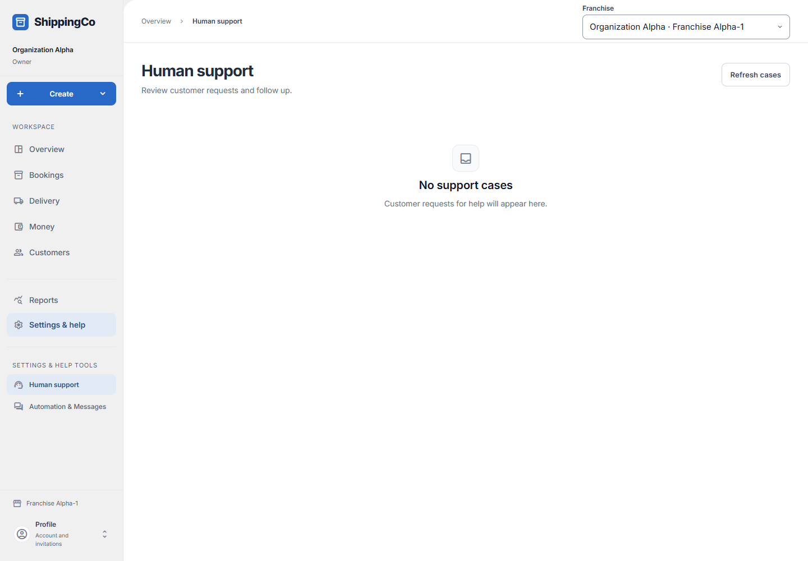

Human support
Help customers and keep staff follow-up in one place.

Before you start
A customer request must already appear in the queue. Internal notes stay with staff.
Read, own and follow up the case
- Open Settings & help, then Human support under Settings & help tools. Review the state and owner in the queue, then choose Review case. Refresh cases checks for updates; Load more cases loads additional rows.
- Read the customer context before acting. Choose Claim case to take ownership. To assign it to someone else, choose the responsible person under Assign to staff and select Assign case.
- For a case you own, select Reply to customer and enter the reply, or Add internal note for staff-only information. The required text is limited to 2,000 characters. Never put delivery verification codes or passwords in either field.
- Resolve case and Reopen case require a reason. Choose the actual reason: customer request, needs followup, answered, operational review or incorrect resolution. Select Resolve case or Reopen case to record the change.
- Expand Staff history to check who acted, when, the reason and any saved message status. The panel may open automatically when message recovery needs attention. Reload case refreshes the selected case.
- A reply saved outside the permitted messaging window is blocked. A saved staff action is not proof that the customer received a message. Failed, uncertain or suppressed delivery needs administrator review.
Quick steps
- Open Human support and select Review case.
- Read the recent customer context. Claim an open case, or assign it to a staff member.
- For a case you own, choose Reply to customer or Add internal note. Write the text and select Submit reply or Save internal note.
- Choose Resolve case with the true reason when the work is done. Reopen case if follow-up is needed.
- Check Staff history for the saved action and any customer-message status.
Fields on this screen
- Action: Claim case, Assign case, Reply to customer, Add internal note, Resolve case or Reopen case. Available choices depend on ownership and state.
- Assign to staff: Choose the person who will handle the case.
- Customer message: Required for a reply. Up to 2,000 characters. Do not include passwords or delivery codes.
- Internal note: Required for a staff note. Up to 2,000 characters. Not sent to the customer.
- Reason: For resolving or reopening: customer request, needs followup, answered, operational review or incorrect resolution.
What happens next
The action is saved in staff history. A saved reply may be blocked outside the messaging window, so check its send status.
If you get stuck
- No cases: customer help requests have not appeared in this branch yet.
- Cannot reply: claim or receive assignment to the case first, where allowed.
- Failed or uncertain send: ask the franchise administrator to review messaging recovery. Do not duplicate an uncertain send.
- Context is a brief record of outcomes, not a full conversation transcript.
About this guide
Checked against the current app source on 1 November 2026. Buttons depend on your access and the current record. This guide does not give extra access.